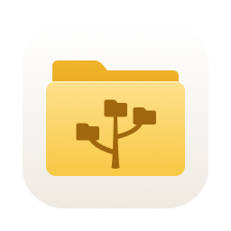
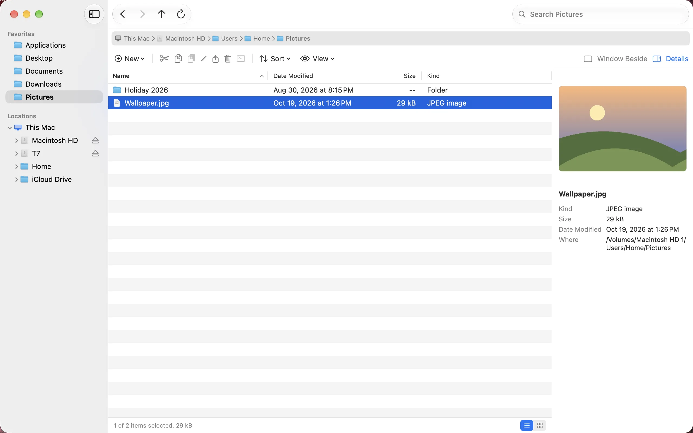
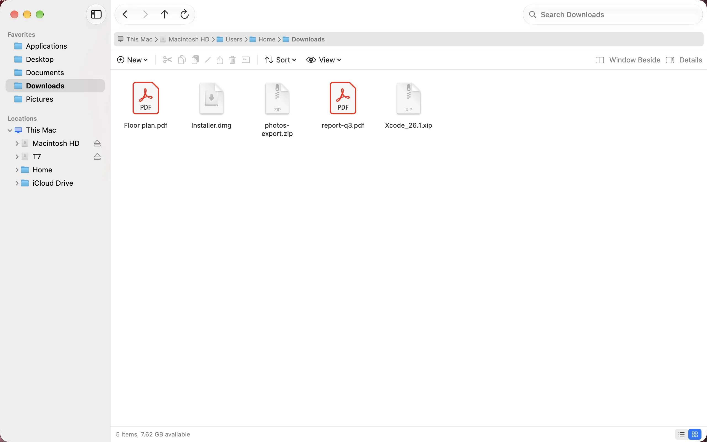
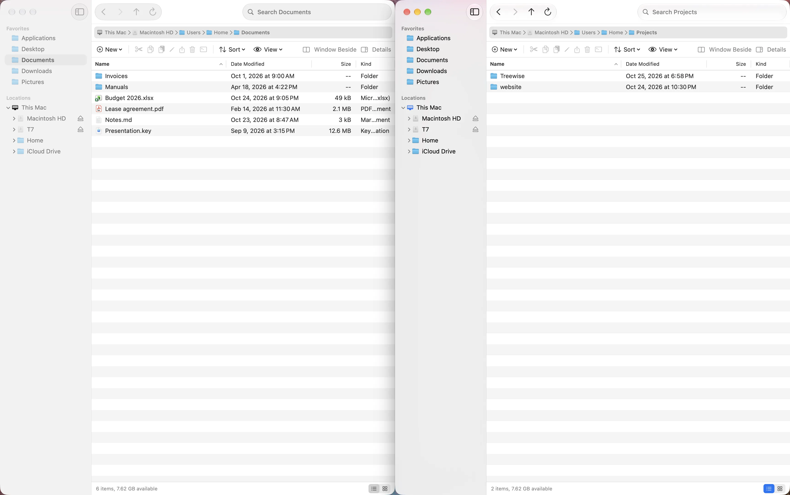

TreewiseA folder tree you can open to any depth, an address bar, cut and paste, and two windows side by side. Made for people who learned files on Windows and now work on a Mac.



Download the disk image, open it and drag Treewise onto Applications. It is signed and notarized by Apple, so it opens without a warning.
Or use Homebrew:
brew install --cask mag243/tap/treewise
Treewise checks for a new version once a day and asks before it installs one. You can turn this off in Settings. The check only reads a list of versions from this site and sends nothing about you or your Mac.
Every update is signed twice, by Apple’s Developer ID and by Treewise’s own update key, and installs only when both check out.
Treewise needs macOS 15 Sequoia or later, on Apple silicon or Intel. It speaks English, Dutch and German, following your system language.
To remove it, drag it from Applications to the Trash. With Homebrew, brew uninstall --zap --cask treewise also removes its settings.
Found a bug, or missing something from Explorer? Open an issue.
Treewise is in beta. It always deletes through the Trash, but keep a backup of anything you cannot lose.